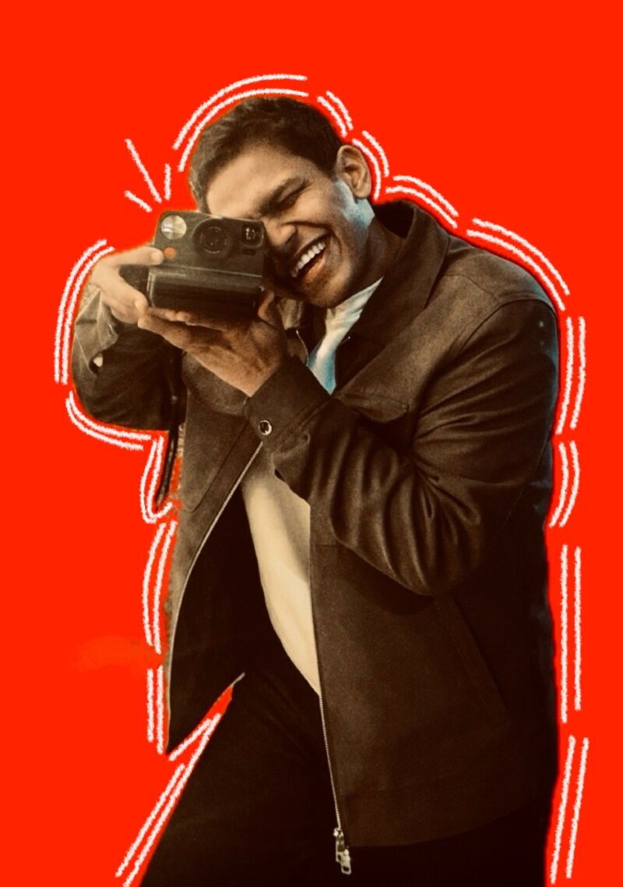
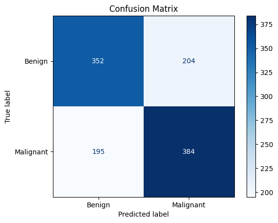
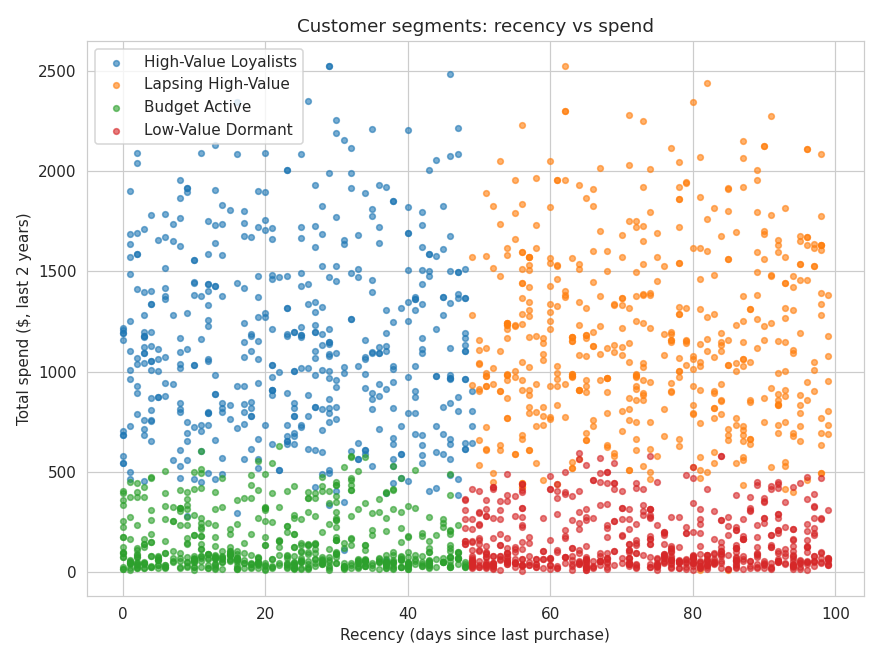
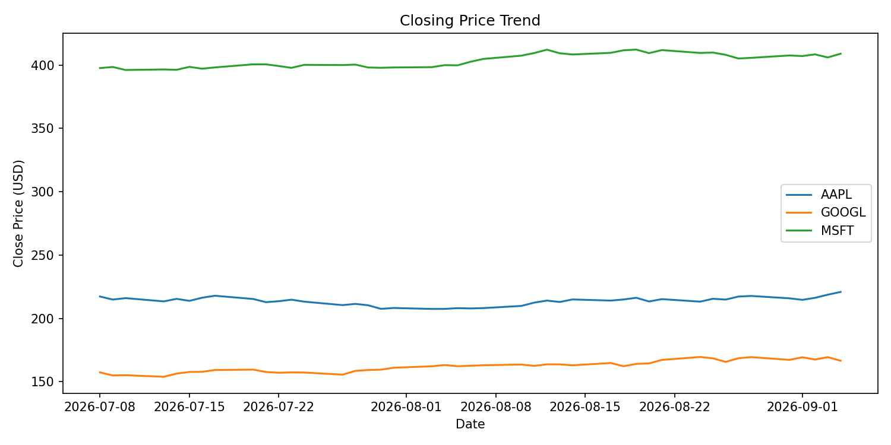

Room tour
A presenter-led walk through student life in a Unite room, from key card to study desk.

Short-form video, photography and stories that make people stop scrolling.
Watch the work ↓MSc Data Science, Distinction. Pipelines, models and analysis that turn data into decisions.
See the projects ↓Manchester, United Kingdom · Mumbai roots
I'm Priyanshu. Content creation has been the backbone of everything I've done, from making campaign content at my college in Mumbai to presenting reels for Unite Students in Manchester and shooting events for Electric Shuffle.
Alongside it, I studied the other side of the screen: a BSc in Information Technology, then an MSc in Data Science with Distinction from Manchester Metropolitan University. I build data pipelines, machine learning models and statistical analyses, and I publish them on GitHub.
So I know what makes content land, and I know how to measure whether it did.
Reels I presented, shot and edited, and the event photography I captured for brands. Tap a phone to play with sound.
A presenter-led walk through student life in a Unite room, from key card to study desk.
A scripted explainer: transport hacks, budget shopping, student discounts and the Blackbullion app for National Student Money Week.
Bar team, live music and festive crowds, cut to the pace of a busy December night.
DJ sets, dancing and the bar in full swing, from the neon sign outside to the last round.
Receptionist & Games Master · Manchester
I started on reception and quickly worked across the whole venue: hosting shuffleboard games, supporting the floor, the bar and the kitchen, and keeping everything lined up on busy nights.
At events I pick up a camera too. I shot the team's weekend on a disposable, and the set was published on Electric Shuffle's official Instagram. I also film clips the team can use in future content.
Shot on disposable for @electricshuffle · published Oct 2026
Four public projects, each built end to end and tested, covering health, finance, marketing and social media.

A ResNet-50 transfer-learning model that classifies mammogram lesions as benign or malignant on the CBIS-DDSM dataset. Repackaged from my dissertation into a reproducible pipeline, from data prep through training and evaluation to a demo app, with an honest write-up of its limitations.

Answers two questions every marketing team asks: who should we target next, and did that campaign actually work? Segments customers into four named personas and tests campaign performance statistically.

Pulls daily prices from a live REST API, cleans and structures them, loads them into a SQL database and answers questions with SQL and charts. Staged like production data infrastructure, scaled down to run on a laptop.
An analytics engineering project on YouTube data from fitness and nutrition brands in the United Kingdom, asking what a social team cares about: which content drives engagement, and when should we post?
Sep 2024 – Oct 2025 · Manchester
Manchester Metropolitan University. Advanced Machine Learning, Deep Learning, Computational Mathematics & Statistics, Data Management & Governance, Algorithms & Data Structures.
Jun 2021 – Apr 2024 · Mumbai
Vidyalankar School of IT. Python, Data Structures, Database Management Systems, Artificial Intelligence, Business Intelligence. Final project: a Movie Success Predictor in Python.
Most people bring one of these to a team. The overlap is where I'm most useful: content made with an analyst's eye, and analysis that understands audiences.
Ran the brand's social channels and analysed campaign results, lifting engagement by 20%. Validated multi-source campaign data with zero discrepancies flagged.
Led multimedia content and backed it with competitor and trend analysis, contributing to a 30% lift in digital engagement.
The social media engagement project brings both sides together: measuring which content and posting times actually perform.
Mumbai to Manchester. Red dots are content, blue dots are data, split dots are both. Use the switch at the top to focus on one side.
Python, databases, AI and business intelligence. Built a Movie Success Predictor as my final project.
Led videos, graphics and social posts for the college, kept the content calendar running and used trend analysis to shape strategy.
Managed social media, analysed campaign results with senior executives and validated campaign data before reporting.
Machine learning, deep learning, statistics and data governance. Dissertation on breast cancer detection with deep learning.
Presented, shot and edited reels, photos and stories about student life for Unite's national campaigns, on brand and on deadline.
Front of house and game hosting, plus event photos and video for the brand.
Recognised for working across reception, floor, bar and kitchen.
MSc Data Science with Distinction.
Health, finance, marketing and social media, each built end to end with tests.
Open to graduate roles in data analytics, data science and BI, and to content and social media roles. Based in Manchester, open to roles across the United Kingdom. Eligible to work in the United Kingdom (Graduate visa).